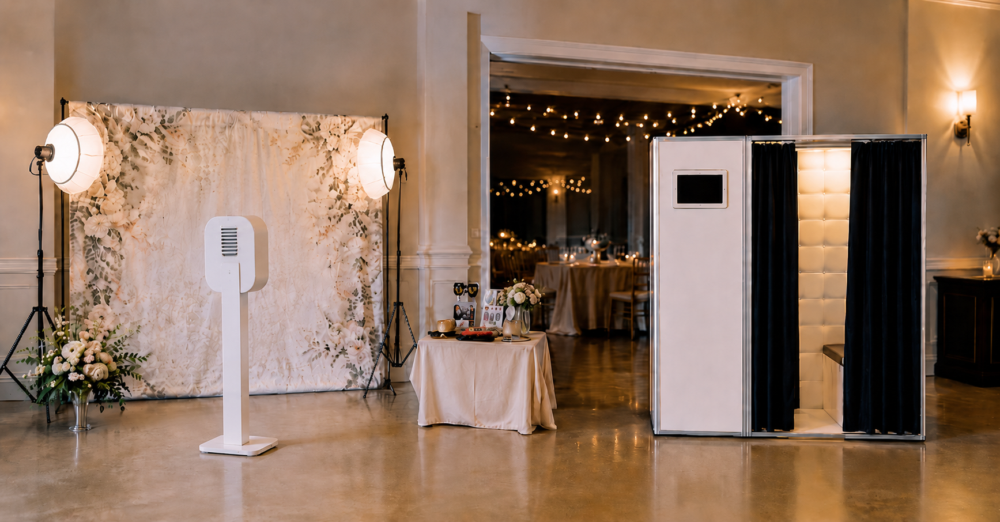

When you start shopping for a wedding photo booth, one of the first choices you will run into is open-air versus enclosed. They sound similar, but they create very different experiences for your guests and very different photos for your album.
The short version: an open-air photo booth uses a backdrop and a camera on a stand in an open space, while an enclosed booth is a curtained or walled structure that guests step inside. Below is exactly how they compare so you can pick the right one for your Bay Area wedding or event.
What Is an Open-Air Photo Booth?
An open-air photo booth places a professional camera and lighting in front of a styled backdrop. There are no walls, so guests pose in an open area that anyone can see. This is the most popular style for modern weddings because it looks clean, fits elegant venues, and photographs beautifully.
Because there is no enclosure, an open-air booth can fit large groups in a single shot. Bridal parties, families, and big friend groups can all squeeze into one photo, which is hard to do in a small enclosed space.
What Is an Enclosed Photo Booth?
An enclosed photo booth is the classic style many people picture first: a structure with curtains or walls that guests step inside. It feels private and a little playful, which can encourage guests to be sillier than they might be out in the open.
The tradeoff is space. Enclosed booths usually fit two to four people comfortably, so they are not ideal when you want big group shots. They also take up a fixed footprint that can feel bulky in smaller or more upscale venues.
Open-Air vs Enclosed: Side-by-Side
- Group size: Open-air handles large groups easily. Enclosed works best for two to four guests.
- Photo quality: Open-air booths usually pair a better camera and backdrop, so the images look more polished.
- Privacy and fun: Enclosed booths feel more private, which can bring out goofier poses.
- Venue fit: Open-air blends into elegant weddings. Enclosed has a fun, retro vibe.
- Space needed: Open-air needs about an 8 by 8 foot area. Enclosed needs a similar footprint plus room for the structure.
Open-Air vs Enclosed: Which Costs More?
Pricing usually comes down to the equipment and what is included rather than the booth style alone. A modern open-air booth often costs a little more because it pairs a higher-end camera, studio lighting, and a custom backdrop, all of which raise the quality of every photo your guests take home.
Enclosed booths can sometimes be cheaper to rent, especially older or self-service units, but the savings can disappear once you add prints, an attendant, or a nicer shell. The real cost difference is usually small, so it is worth comparing what each package includes instead of the sticker price alone.
When you compare quotes, look at the full package: setup and teardown, an on-site attendant, unlimited prints, digital or QR downloads, props, and a custom photo template. A booth that looks cheaper up front can end up costing more once those extras are added back in. For typical Bay Area numbers and what should be included at each price, see our Bay Area wedding photo booth cost guide.
Which One Should You Choose?
For most Bay Area weddings, an open-air photo booth is the better fit. It handles big group shots, matches modern decor, and the custom backdrop becomes part of your reception styling. If your guest list leans toward large families and bridal parties, open-air is almost always the right call.
An enclosed booth can be a great choice for smaller, more casual events, birthday parties, or venues where guests will enjoy the privacy and retro feel. It is also a fun option when the theme of the event leans nostalgic.
How Much Space Does Each Booth Need?
Plan for roughly an 8 by 8 foot area for an open-air booth so there is room for the backdrop, camera, lighting, and a group of guests. An enclosed booth needs a similar footprint plus clearance for the walls or curtains. Either way, the booth should sit near a standard power outlet and stay close enough to the action that guests actually use it.
If you are still mapping out your reception, our guide on when to open the photo booth at your wedding pairs perfectly with this one and will help you place the booth where it gets the most use.
Essential Reading Before You Book
Once you have picked a booth style, these guides will help you book with confidence:
- Compare vendors and gear: Learn how to spot professional equipment in our guide to choosing a Bay Area photo booth vendor.
- Understand the budget: See typical pricing in our Bay Area wedding photo booth cost guide.
- Why rent at all? Review the key benefits in our wedding photo booth benefits guide.
Handsome Photobooth runs a modern open-air setup with setup, an attendant, unlimited prints, QR downloads, props, and a custom template, so you get big group shots and polished photos without the bulk of an enclosed booth.
See our dedicated Bay Area wedding photo booth rental package for pricing, what is included, and reviews from real couples.